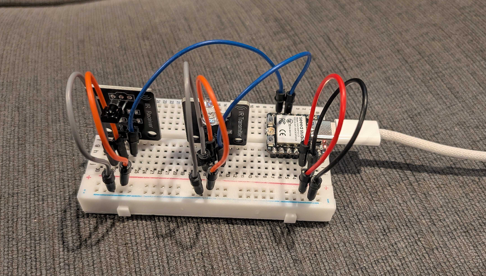

Quick blog post to share IR NEC codes for UGREEN 8k HDMI 2.1 Switch! The remote on this model has four buttons, one for each input, and then a cycle/next button:
| Remote Button | NEC Code |
|---|---|
| Input 1 | 1FE40BF |
| Input 2 | 1FE20DF |
| Input 3 | 1FE609F |
| Next Input | 1FE10EF |
Hopefully this info is useful to someone else. Here's an image of the breadboard layout that I used to capture and send them:

And the specific model interesting parts pictured above are:
- Seeed Studio XIAO ESP32C3
- 38khz Ir Receiver Sensor Module + Ir Transmitter Sensor
If I were a savvier blogger, I'd have Amazon affiliate links up there instead... Well, it's too late now!
Also the library used is: github.com/crankyoldgit/IRremoteESP8266